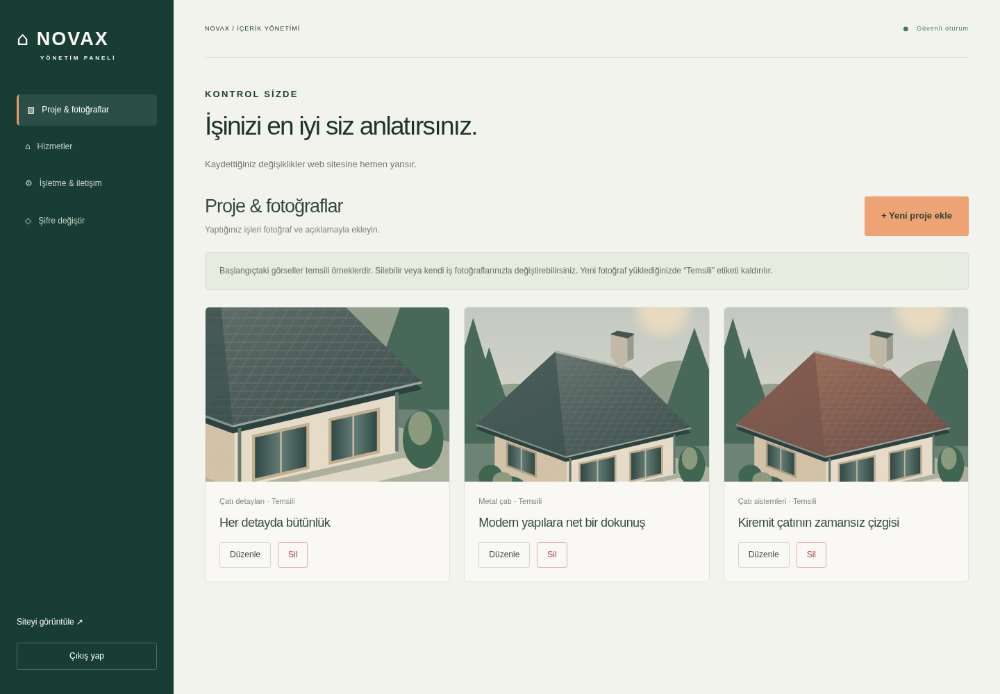

NOVAX ÇATI SİSTEMLERİ
Yönetim paneli önizlemesi
Aşağıdaki görüntü, hazırlanan gerçek yönetim paneline aittir. Bu önizlemede düzenleme yapılamaz. Fotoğraf ekleme, silme ve içerik kaydetme özellikleri Node.js sunucusunda çalışır.

NOVAX ÇATI SİSTEMLERİ
Aşağıdaki görüntü, hazırlanan gerçek yönetim paneline aittir. Bu önizlemede düzenleme yapılamaz. Fotoğraf ekleme, silme ve içerik kaydetme özellikleri Node.js sunucusunda çalışır.
